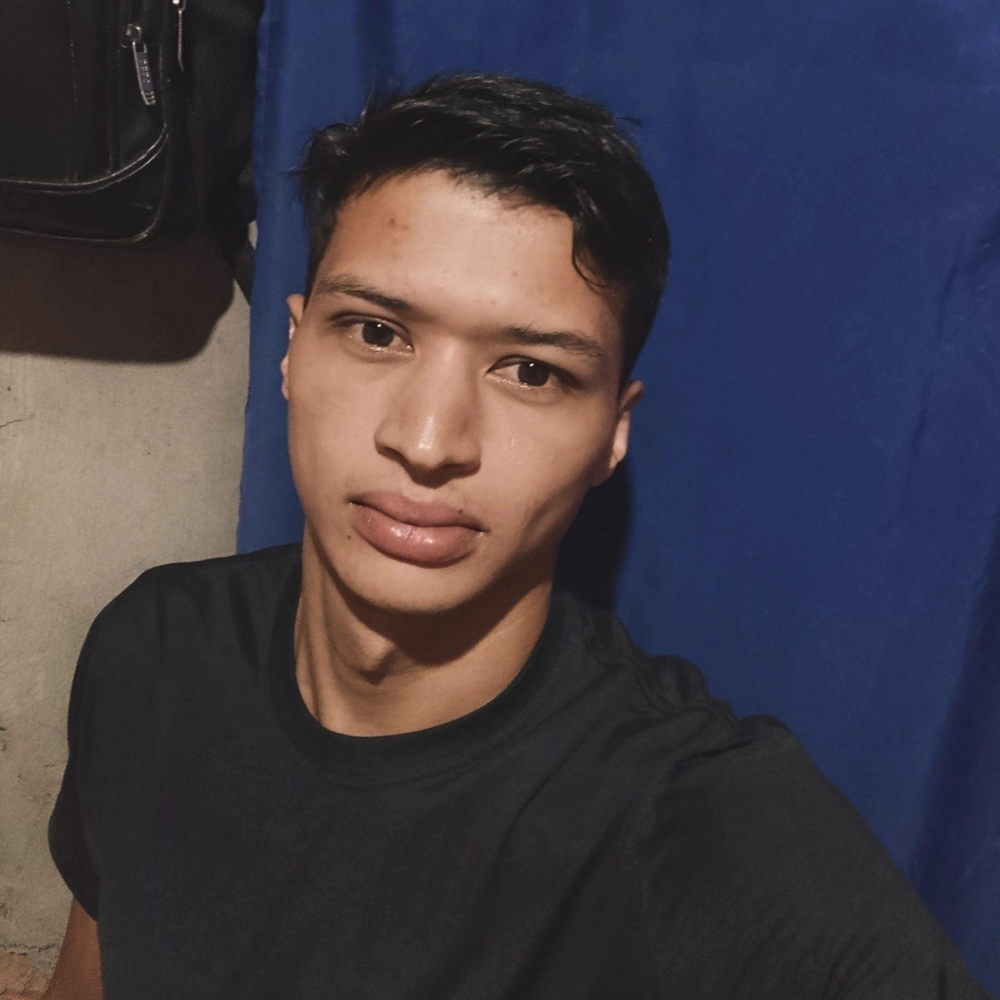

Leildo Gonçalves — Criador do Mestre Kira e do Gabarita Paes

Criador do Mestre Kira e do Gabarita Paes
Leildo do Nascimento Gonçalves é professor de Língua Portuguesa e desenvolvedor de projetos educacionais que aproximam linguagem, produção textual e tecnologia.
Graduado em Letras pela Universidade Estadual do Maranhão (UEMA), articula sua experiência docente à formação em Análise e Desenvolvimento de Sistemas, em andamento na mesma instituição.
Formação acadêmica e estudos complementares
Concluiu a graduação em Letras — Língua Portuguesa pela UEMA, em 2023. Sua formação de pós-graduação reúne estudos sobre leitura, escrita, linguagem e docência:
- Ensino da leitura, escrita e produção de texto — Universidade Pitágoras Unopar Anhanguera.
- Análise do Discurso Midiático — FACUMINAS.
- Tutoria EaD e Docência do Ensino Superior — FACUMINAS.
- Estudos Linguísticos e Literários — FACUMINAS.
- Linguística Aplicada à Educação — FACUMINAS.
É acadêmico do curso superior de tecnologia em Análise e Desenvolvimento de Sistemas na UEMA. Também realizou formação complementar em Programação Web pelo Instituto Federal do Rio Grande do Sul (IFRS), recursos educacionais digitais, mediação pedagógica on-line, educação inclusiva e uso ético e pedagógico da inteligência artificial.
Experiência profissional e atuação educacional
Atua na rede pública de ensino no Maranhão. Seu currículo registra experiência docente na Unidade Escolar Maria Lilamar de Sousa Albuquerque, entre 2021 e 2024, e atuação na Unidade Escolar Justino Rodrigues de Oliveira, em Lago do Junco–MA, desde 2025.
Seu trabalho inclui o ensino de Língua Portuguesa e a formação de professores no curso de Magistério. A experiência em sala de aula contribui para identificar necessidades de estudo e desenvolver materiais que apoiem a leitura, a escrita e a autonomia dos estudantes.
Essa trajetória conecta a formação em Letras ao desenvolvimento de sistemas, com foco em organizar atividades, acompanhar resultados e tornar os recursos educacionais mais acessíveis.
Projetos que conectam educação e tecnologia
Portal educacional Mestre Kira
O Mestre Kira reúne conteúdos de língua portuguesa, linguística, literatura, análise do discurso, interpretação textual e redação. O portal atende estudantes, professores, vestibulandos, concursandos e leitores interessados nos estudos da linguagem.
Os materiais procuram unir fundamentação conceitual, clareza didática e aplicação prática, apoiando tanto o estudo individual quanto o trabalho pedagógico.
Plataforma de Redação Mestre Kira
Ambiente digital para escolas, professores e estudantes organizarem propostas, produção textual, correções por competências, devolutivas e acompanhamento de desempenho.
Conheça a plataforma de redaçãoGabarita Paes
Plataforma de preparação para o PAES UEMA com simulados, treino ENEM por disciplina, redação com apoio de IA, revisão dos erros e histórico de desempenho.
Conheça o Gabarita PaesO Gabarita Paes está com acesso gratuito por tempo limitado. Suas avaliações pedagógicas e seu ranking são ferramentas de estudo, sem equivalência com resultados oficiais da UEMA.
Currículo Lattes
Consulte a formação, a experiência profissional e a produção acadêmica de Leildo Gonçalves diretamente na Plataforma Lattes.
Educação, linguagem e tecnologia
O trabalho desenvolvido no Mestre Kira parte da integração entre conhecimento da linguagem, experiência docente e tecnologia. O objetivo é oferecer conteúdos e ferramentas que ajudem os estudantes a organizar a preparação, compreender suas dificuldades e praticar com mais autonomia.
Essa proposta valoriza a leitura crítica e o uso responsável dos recursos digitais. A tecnologia apoia o processo de aprendizagem, enquanto a análise dos resultados e a mediação pedagógica continuam essenciais.